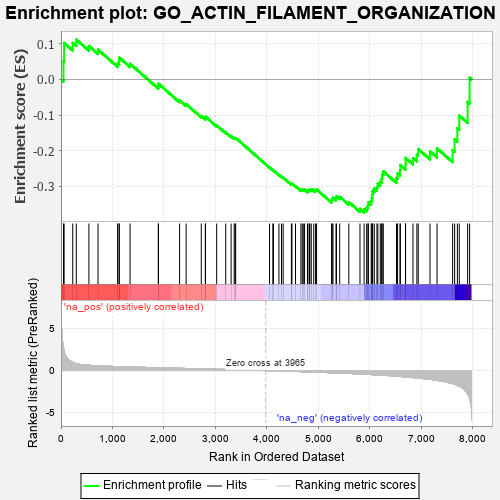
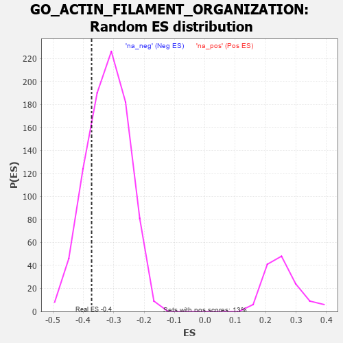

| | | Dataset | 7d |
| Phenotype | NoPhenotypeAvailable |
| Upregulated in class | na_neg |
| GeneSet | GO_ACTIN_FILAMENT_ORGANIZATION |
| Enrichment Score (ES) | -0.37280422 |
| Normalized Enrichment Score (NES) | -1.1649439 |
| Nominal p-value | 0.21709007 |
| FDR q-value | 0.675343 |
| FWER p-Value | 1.0 |
Table: GSEA Results Summary

Fig 1: Enrichment plot: GO_ACTIN_FILAMENT_ORGANIZATION
Profile of the Running ES Score & Positions of GeneSet Members on the Rank Ordered List
| PROBE | GENE SYMBOL | GENE_TITLE | RANK IN GENE LIST | RANK METRIC SCORE | RUNNING ES | CORE ENRICHMENT | | 1 | TGFB3 | | | 49 | 2.654 | 0.0508 | No |
| 2 | RAC2 | | | 60 | 2.442 | 0.1020 | No |
| 3 | RHOH | | | 228 | 0.987 | 0.1021 | No |
| 4 | FSCN1 | | | 297 | 0.830 | 0.1113 | No |
| 5 | SRF | | | 542 | 0.615 | 0.0935 | No |
| 6 | ID1 | | | 719 | 0.555 | 0.0831 | No |
| 7 | MYO1D | | | 1099 | 0.464 | 0.0451 | No |
| 8 | SRC | | | 1128 | 0.459 | 0.0514 | No |
| 9 | NCK2 | | | 1131 | 0.458 | 0.0609 | No |
| 10 | KPTN | | | 1341 | 0.422 | 0.0435 | No |
| 11 | PAK3 | | | 1889 | 0.322 | -0.0189 | No |
| 12 | CUL3 | | | 1893 | 0.321 | -0.0124 | No |
| 13 | WASF1 | | | 2303 | 0.259 | -0.0587 | No |
| 14 | MET | | | 2430 | 0.240 | -0.0695 | No |
| 15 | SLIT2 | | | 2724 | 0.195 | -0.1025 | No |
| 16 | FER | | | 2803 | 0.183 | -0.1084 | No |
| 17 | BRK1 | | | 2805 | 0.183 | -0.1046 | No |
| 18 | WNT4 | | | 3023 | 0.146 | -0.1290 | No |
| 19 | TWF1 | | | 3199 | 0.123 | -0.1485 | No |
| 20 | SMAD3 | | | 3303 | 0.105 | -0.1593 | No |
| 21 | FMN1 | | | 3363 | 0.095 | -0.1648 | No |
| 22 | GMFB | | | 3381 | 0.091 | -0.1650 | No |
| 23 | GAS2 | | | 3392 | 0.090 | -0.1643 | No |
| 24 | ACTN1 | | | 4050 | -0.016 | -0.2473 | No |
| 25 | MTOR | | | 4114 | -0.025 | -0.2547 | No |
| 26 | ABL1 | | | 4125 | -0.027 | -0.2554 | No |
| 27 | ARPC2 | | | 4232 | -0.047 | -0.2678 | No |
| 28 | WNT11 | | | 4282 | -0.056 | -0.2728 | No |
| 29 | BAG4 | | | 4314 | -0.061 | -0.2755 | No |
| 30 | EPS8 | | | 4474 | -0.088 | -0.2937 | No |
| 31 | HIP1 | | | 4485 | -0.092 | -0.2930 | No |
| 32 | ABI2 | | | 4554 | -0.106 | -0.2993 | No |
| 33 | ARPC3 | | | 4659 | -0.129 | -0.3097 | No |
| 34 | LIMK1 | | | 4684 | -0.136 | -0.3099 | No |
| 35 | ARF6 | | | 4704 | -0.140 | -0.3093 | No |
| 36 | WASF3 | | | 4730 | -0.145 | -0.3093 | No |
| 37 | MYO5A | | | 4787 | -0.155 | -0.3131 | No |
| 38 | FLII | | | 4795 | -0.156 | -0.3106 | No |
| 39 | WDR1 | | | 4824 | -0.163 | -0.3107 | No |
| 40 | BIN3 | | | 4832 | -0.165 | -0.3080 | No |
| 41 | DLG1 | | | 4860 | -0.169 | -0.3078 | No |
| 42 | CAPZB | | | 4908 | -0.179 | -0.3099 | No |
| 43 | CAP2 | | | 4943 | -0.186 | -0.3102 | No |
| 44 | ARAP1 | | | 4963 | -0.191 | -0.3085 | No |
| 45 | SSH1 | | | 5254 | -0.258 | -0.3398 | No |
| 46 | PICK1 | | | 5265 | -0.263 | -0.3354 | No |
| 47 | FAT1 | | | 5281 | -0.267 | -0.3316 | No |
| 48 | ELMO2 | | | 5341 | -0.283 | -0.3330 | No |
| 49 | EPHA1 | | | 5349 | -0.285 | -0.3277 | No |
| 50 | LATS1 | | | 5412 | -0.298 | -0.3292 | No |
| 51 | TTC17 | | | 5589 | -0.341 | -0.3442 | No |
| 52 | BBS4 | | | 5806 | -0.407 | -0.3628 | No |
| 53 | ARPC4 | | | 5886 | -0.430 | -0.3636 | Yes |
| 54 | CAP1 | | | 5935 | -0.447 | -0.3600 | Yes |
| 55 | ACTN2 | | | 5960 | -0.458 | -0.3532 | Yes |
| 56 | TPM2 | | | 5970 | -0.460 | -0.3445 | Yes |
| 57 | JMY | | | 6023 | -0.479 | -0.3408 | Yes |
| 58 | RAC1 | | | 6036 | -0.484 | -0.3319 | Yes |
| 59 | ADD2 | | | 6046 | -0.487 | -0.3226 | Yes |
| 60 | EVL | | | 6052 | -0.490 | -0.3127 | Yes |
| 61 | DBNL | | | 6084 | -0.501 | -0.3058 | Yes |
| 62 | GBA2 | | | 6136 | -0.515 | -0.3013 | Yes |
| 63 | ROCK1 | | | 6152 | -0.520 | -0.2920 | Yes |
| 64 | MYO1E | | | 6200 | -0.537 | -0.2864 | Yes |
| 65 | TPM1 | | | 6226 | -0.545 | -0.2779 | Yes |
| 66 | CDC42 | | | 6236 | -0.548 | -0.2672 | Yes |
| 67 | SVIL | | | 6259 | -0.558 | -0.2580 | Yes |
| 68 | TRPV4 | | | 6515 | -0.668 | -0.2760 | Yes |
| 69 | KANK1 | | | 6536 | -0.678 | -0.2639 | Yes |
| 70 | ARF1 | | | 6583 | -0.701 | -0.2547 | Yes |
| 71 | ALMS1 | | | 6590 | -0.704 | -0.2403 | Yes |
| 72 | CATIP | | | 6690 | -0.756 | -0.2366 | Yes |
| 73 | PAK1 | | | 6691 | -0.757 | -0.2204 | Yes |
| 74 | FHOD3 | | | 6835 | -0.834 | -0.2206 | Yes |
| 75 | ESPN | | | 6911 | -0.873 | -0.2113 | Yes |
| 76 | GHSR | | | 6937 | -0.894 | -0.1953 | Yes |
| 77 | COTL1 | | | 7166 | -1.046 | -0.2017 | Yes |
| 78 | MYO7A | | | 7302 | -1.175 | -0.1936 | Yes |
| 79 | KANK3 | | | 7605 | -1.559 | -0.1984 | Yes |
| 80 | MCU | | | 7644 | -1.637 | -0.1680 | Yes |
| 81 | MYO6 | | | 7697 | -1.753 | -0.1370 | Yes |
| 82 | PLS1 | | | 7734 | -1.855 | -0.1016 | Yes |
| 83 | CAV3 | | | 7896 | -2.739 | -0.0632 | Yes |
| 84 | ARRB1 | | | 7935 | -3.377 | 0.0046 | Yes |
Table: GSEA details [plain text format]

Fig 2: GO_ACTIN_FILAMENT_ORGANIZATION: Random ES distribution
Gene set null distribution of ES for GO_ACTIN_FILAMENT_ORGANIZATION